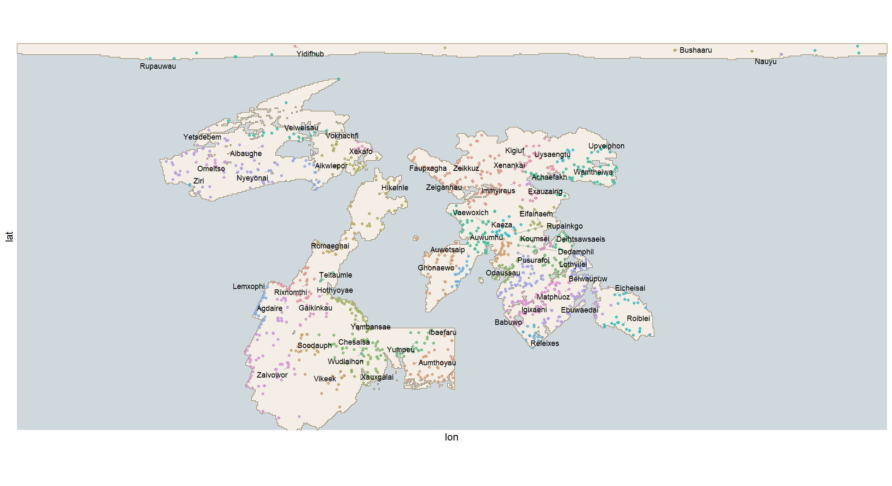
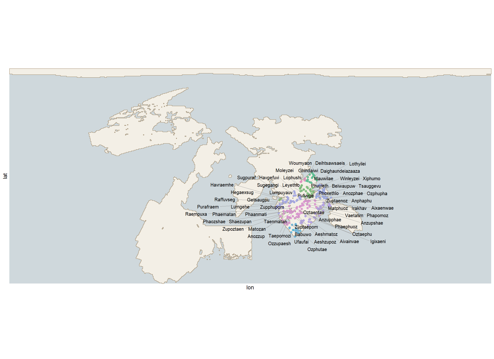

11 Languages and Places
11.1 The Tongues of EART-H
I have walked the length of EART-H, and in my walking I have heard the speech of many peoples. And I will say this, which any traveller who has carried their pack across two continents will affirm: there is no one tongue here, but many. The folk of one valley name their town in one fashion, and the folk of the next valley over in another, and a traveller journeying from the inner sea to the great northern fastness will pass through the speech of a dozen peoples before they reach their destination.
Yet they are not scattered at random. A town speaks most like the towns its people can most easily get to. Where the country between two places is hard, the speech drifts apart; where the road is good, or where a short crossing joins two coasts, it stays near akin. So the frontier between one tongue and the next is not a mountain or a river, as a child would guess. It is wherever people have found it not worth the walk.
I have tested this the only way a cartographer can, which is by walking, and the result is that I can now generally tell how difficult a journey will be before I make it, simply by how strange the names sound at the far end.
The reader will see that the tongues are not the continents. A single landmass may hold three or four — the inland speech one thing, the coastal speech another, and a third upon some peninsula whose only easy road runs back along its own shore. And two coasts on different continents may share a tongue outright, if the crossing between them is short and much used, for merchants carry words back and forth as readily as they carry salt and tin, and rather more cheaply.
11.2 The Names of Places
A town is named in the tongue of its own country, which sounds obvious until you stand at a boundary and hear it happen. I have set down here, for example, the names of certain great cities upon Stockholm, where four tongues meet within a fortnight’s walk and none of them can be mistaken for another.

| Community | Continents | Vowels | Suffixes | Largest towns |
|---|---|---|---|---|
| 41 | Tusque, Salmon | o i a au ei | ydra, ai, ath | Zeiganhau, Ganvozei, Nachvogig, Gaumhohau, Vozeiho, Tsagigni |
| 30 | Stockholm | ae a ei u ai o | i, ydra, arin | Matphuoz, Anzupshae, Zupphupom, Phaematan, Shaezupan, Aeshmatoz |
| 28 | Tusque, Stockholm | e au a ae u | emi, oi, i | Pusurafoi, Tsauggevu, Pufuvge, Havgefuvi, Sugegangi, Vupuhavi |
| 16 | Fingers | o au ae ei | ath, ano | Aumthoyau, Naubzonyeingath, Thosaemonathath, Yauyaesxaeyathath, Monaumtheiath, Zonaukyau |
| 46 | Tusque, Centre | au ae i ei e o | i, esh, oi | Vaewoxich, Yausovtei, Chexwoovi, Kotevae, Izkoyauw, Yauwizte |
| 20 | Adirondaq | ae u au o ai | aru, ar, ulan | Zaivowor, Vauvuwo, Uvyuoraru, Zaizukhu, Wokhuyu, Yushuwoar |
Set one country’s names beside another’s and the difference announces itself long before you could say what it consists of. A traveller who has heard a single name spoken aloud can usually tell which quarter of the world it came out of, and I have won small sums this way in taverns from people who did not believe me.
Now, I have asked in a great many places why the neighbours sound as they do, and I must report that I have never once been given an answer that was not an insult wearing the clothes of a theory.
The marsh-folk of the eastern deltas, whose names sit heavy at the back of the throat and finish in a soft croak, are held by the uplanders above them to have learned to speak from frogs — and it is pointed out to you, with enormous satisfaction, that on a still evening you cannot tell which is which. The marsh-folk return the compliment exactly: the upland names are short and bitten off, they say, because it is cold up there and a person who opens their mouth wide loses the warmth of a whole morning. The coast people hiss, everyone agrees, from listening to the sea too long. The people of the high dry country rattle because of the insects. And in one province I was told, with a perfectly straight face, that a neighbouring town’s names were so full of b and p because its founder had been struck in the mouth and the whole place had been talking around it ever since.
None of this is true. All of it is repeated everywhere, in every country, always about the next country over. What I have actually observed is that speech follows the roads, and that when a person explains to me about the frogs they are not telling me about frogs at all. They are telling me who they would not like to be mistaken for.
This is, I am told by certain wise ones, the natural way of all tongues everywhere: that they remain alike where folk meet, and grow apart where folk seldom meet, and that the map of speech is therefore a kind of shadow of the map of going-and-coming. Upon EART-H this is most plainly seen, for our roads and waters are few enough that the boundaries between tongues are sharp and the company of each speech is easily traced.
| Greatest rivers | Greatest waters | High places |
|---|---|---|
| Dauwaupai | Phuphaoz | Smawarip |
| Dxugengde | Veinggavo | Tmeibii |
| Ufghaig | Rugaxor | Eihifugh |
| Gaihimeon | Yamfimvai | Shaughoga |
| Vogiggan | Meirubop | Sobaeshau |
| Ganvauga | ||
| Gigvohau | ||
| Voninach |
I should say plainly, before anything else in this chapter is taken as expertise, that I have none. I have no background in linguistics, no training in phonology. Everything here was built with AI assistance from a standing start, and I would not want to be examined on any of it.
What I brought was not knowledge but a requirement. I did not want the names of this world to tell a reader what to expect of the people living there. A setting where one region’s towns end in -ovna and the next region’s end in -shire has already told you which people are the Russians and which are the English, and before anyone has read a sentence about who these people actually are. Given that the whole point of this project is to break down the familiar so we can imagine alternatives, importing a set of cultural expectations through the back door of the place-names seemed like exactly the mistake I was trying not to make.
The approach I was steered toward: build each region’s stock of sounds out of an abstract pool with no real-world source, hand one stock to each cluster of well-connected settlements, and generate names inside those limits. Because the clusters come from the road and trade network of the previous chapter, the boundaries between tongues fall where travel is hard. That at least has the right shape of explanation. Whether it bears any resemblance to how real languages diverge, I genuinely do not know. What I will say, is that the computer does not have an ear for sound. My own journey learning Italian taught me that so many of the rules of language can be understood simply as people making stuff sound good once you have a certain ear. This is profoundly true for Italian, but I expect it is the same in many languages. The computer with its sound lists does not have this sensitivity and so I do worry that many of the names seem almost unpronounceable. At least I have not produced Jar Jar Binks or his successors…
On invented speech, and how it goes wrong
- “Racial Ventriloquism,” Patricia J. Williams (Williams 1999) — written while The Phantom Menace was still in cinemas, and the piece that named what was wrong with Jar Jar.
- English with an Accent, Rosina Lippi-Green (Lippi-Green 2012) — how film teaches audiences to map accent onto virtue. The likeliest explanation of the Jar Jar failure: nobody invented anything, they reached for a stock of accents that already carried meanings.
- The Everyday Language of White Racism, Jane H. Hill (Hill 2008) — “Mock Spanish,” and how playful borrowing of a language’s sounds does racial work precisely by not seeming serious.
On making languages on purpose
- In the Land of Invented Languages, Arika Okrent (Okrent 2009) — Esperanto, Klingon, Blissymbols, and the people who build such things.
- The Art of Language Invention, David J. Peterson (Peterson 2015) — by the maker of Dothraki and High Valyrian.
- “Constructed Languages,” Christine Schreyer (Schreyer 2021) — a review from an anthropologist who works on both invented languages and Indigenous language revitalisation.
On why real tongues diverge, and what travel does to them
- “Linguistic Change and Diffusion,” Peter Trudgill (Trudgill 1974) — a gravity model for dialect spread: features move between places in proportion to population and inversely to distance.
- Sociolinguistic Typology, Peter Trudgill (Trudgill 2011) — the argument that social structure shapes grammatical complexity, so that isolated communities and well-connected ones develop different kinds of difficulty.
- Language Contact, Sarah G. Thomason (Thomason 2001) — what happens to languages that meet.
- The Ecology of Language Evolution, Salikoko S. Mufwene (Mufwene 2001) — languages as populations competing in an ecology.
On language families at large
- Empires of the Word, Nicholas Ostler (Ostler 2005) — a history of which languages spread and why, where the answer is repeatedly trade, prestige and conquest rather than anything internal to the language.
- The Horse, the Wheel, and Language, David W. Anthony (Anthony 2007) — Indo-European dispersal as a problem of mobility and transport technology.
On the naming of places
- “Geographies of Toponymic Inscription,” Rose-Redwood, Alderman and Azaryahu (Rose-Redwood, Alderman, and Azaryahu 2010) — the review that establishes place-naming as an exercise of power rather than a labelling convenience.
- Critical Toponymies, Berg and Vuolteenaho, eds. (Berg and Vuolteenaho 2009) — the contested politics of who gets to name.
- Names on the Land, George R. Stewart (Stewart 1945) — the pleasure of the thing: a whole book on how American places came by their names.